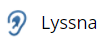
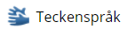
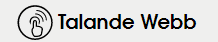
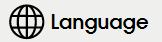

Vad betyder tillgänglighet ?
Tillgänglighet betyder åtkomlighet, åtkomst. Då det finns människor i samhället med olika funktionsvariationer behöver man öka tillgängligheten. Man brukar dela in funktionerna i fem kategorier; motorik, syn, hörsel, tal och kognition.
Tillgänglighet på webben
Tillgänglighet på webben betyder att man bygger en webbplats eller digital tjänst
som är anpassad för alla människor oavsett om man har någon typ av funktionsvariant.
Ex på anpassning: Användare kan ställa in ljusstyrka, höja och sänka ljud, syntolkning m.m.
Det är därför viktigt att webbplatsen utformas på rätt sätt. Tillgängligheten ska skapa förutsättningar
så att så många som möjligt kan använda tjänsten och ta del av informationen.
Exempel på synboler som kan användas på hemsidor:
   Fem exempel:
- Ge beskrivning på bilder, ifall de inte visas. (alt="")
- Gör inte instruktioner beroende av sensoriska kännetecken (ex:färger)
- Använd tillräcklig kontrast mellan bakgrund och text
- Inte använda blinkade ljus som kan orsaka epileptiska anfall
- Markera tydligt vilket fält eller element som är i fokus